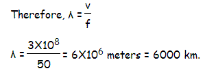
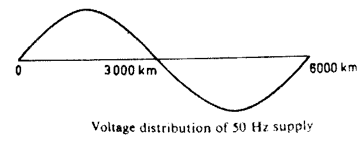

Performance of Transmission Line
The transmission lines are categorized as three types-
1) Short transmission line– the line length is up to 80 km.
2) Medium transmission line– the line length is between 80km to 160 km.
3) Long transmission line – the line length is more than 160 km.
Whatever may be the category of transmission line, the main aim is to transmit power from one end to another. Like other electrical system, the transmission network also will have some power loss and voltage drop during transmitting power from sending end to receiving end. Hence, performance of transmission line can be determined by its efficiency and voltage regulation.
Power sent from sending end - line losses = Power delivered at receiving end.
Voltage regulation of transmission line is measure of change of receiving end voltage from no-load to full load condition.
Every transmission line will have three basic electrical parameters. The conductors of the line will have electrical resistance, inductance, and capacitance. As the transmission line is a set of conductors being run from one place to another supported by transmission towers, the parameters are distributed uniformly along the line.
The electrical power is transmitted over a transmission line with a speed of light that is 3X108 m ⁄ sec. Frequency of the power is 50 Hz. The wave length of the voltage and electric current of the power can be determined by the equation given below,
f.λ = v where f is power frequency, &labda is wave length and v is the speed of light.

Hence the wave length of the transmitting power is quite long compared to the generally used line length of transmission line.
For this reason, the transmission line, with length less than 160 km, the parameters are assumed to be lumped and not distributed. Such lines are known as electrically short transmission line. This electrically short transmission lines are again categorized as short transmission line(length up to 80 km) and medium transmission line(length between 80 and 160 km). The capacitive parameter of short transmission line is ignored whereas in case of medium length linethe , capacitance is assumed to be lumped at the middle of the line or half of the capacitance may be considered to be lumped at each ends of the transmission line. Lines with length more than 160 km, the parameters are considered to be distributed over the line. This is called long transmission line.
 by
by